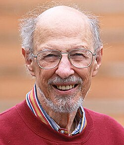

Fernando J. Corbató | |
|---|---|
 | |
| Born | Fernando José Corbató July 1, 1926 Oakland, California, U.S. |
| Died | July 12, 2019 (aged 93) |
| Education | University of California, Los Angeles California Institute of Technology (BS) Massachusetts Institute of Technology (MS, PhD) |
| Known for | Multics |
| Awards | Turing Award (1990) Computer History Museum Fellow (2012)[1] |
| Scientific career | |
| Fields | Computer scientist |
| Institutions | Massachusetts Institute of Technology |
| Thesis | A calculation of the energy bands of the graphite crystal by means of the tight-binding method (1956) |
| John C. Slater[2] | |
Doctoral students | Jerome H. Saltzer |
Fernando José "Corby" Corbató (July 1, 1926 – July 12, 2019)[3] was a Spanish-American computer scientist, notable as a pioneer in the development of time-sharing operating systems. He won the 1990 ACM Turing Award.
Corbató was born on July 1, 1926, in Oakland, California, to Hermenegildo Corbató, a Spanish literature professor from Villarreal, Spain, and Charlotte (Jensen) Corbató, a Danish American.[4][5] In 1930, the Corbató family moved to Los Angeles for Hermenegildo's job at the University of California, Los Angeles (UCLA).[6]
In 1943, Corbató enrolled at UCLA, but due to World War II he was recruited by the Navy during his first year. During the war, Corbató "debug[ged] an incredible array of equipment", inspiring his future career.[5]
Corbató left the Navy in 1946, and enrolled at the California Institute of Technology, where he received a bachelor's degree in physics in 1950. He then earned a PhD in physics from the Massachusetts Institute of Technology in 1956. He joined MIT's Computation Center immediately after graduation, became a professor in 1965, and stayed at MIT until he retired.[5]
The first time-sharing system he was associated with was known as the MIT Compatible Time-Sharing System (CTSS), an early version of which was demonstrated in 1961.[7][8] Corbató is credited with the first use of passwords to secure access to files on a large computer system, though he later claimed that this rudimentary security method had proliferated and became unmanageable.[9]
The experience with developing CTSS led to a second project, Multics, which was adopted by General Electric for its high-end computer systems (later acquired by Honeywell). Multics pioneered many concepts now used in modern operating systems, including a hierarchical file system, ring-oriented security, access control lists, single-level store, dynamic linking, and extensive on-line reconfiguration for reliable service. Multics, while not particularly commercially successful in itself, directly inspired Ken Thompson to develop Unix, the direct descendants of which are still in extremely wide use; Unix also served as a direct model for many other subsequent operating system designs.
Among many awards, Corbató received the Turing Award in 1990, "for his pioneering work in organizing the concepts and leading the development of the general-purpose, large-scale, time-sharing and resource-sharing computer systems".
In 2012, he was made a Fellow of the Computer History Museum "for his pioneering work on timesharing and the Multics operating system".[10]
Corbató is sometimes known for "Corbató's Law" which states:[11]
The number of lines of code a programmer can write in a fixed period of time is the same, independent of the language used.
Corbató is recognized as helping to create the first computer password.[12]
Corbató married programmer Isabel Blandford in 1962; she died in 1973.[5]
Corbató had a second wife, Emily (née Gluck); two daughters, Carolyn Corbató Stone and Nancy Corbató, by his late wife Isabel; two step-sons, David Gish and Jason Gish; a brother, Charles; and five grandchildren.[5]
Corbató lived on Temple Street in West Newton, Massachusetts. He died on July 12, 2019, in Newburyport, Massachusetts, at the age of 93 due to complications from diabetes.[5]
{{cite web}}: CS1 maint: deprecated archival service (link)
Regardless of whether one is dealing with assembly language or compiler language, the number of debugged lines of source code per day is about the same!
{kind=link}